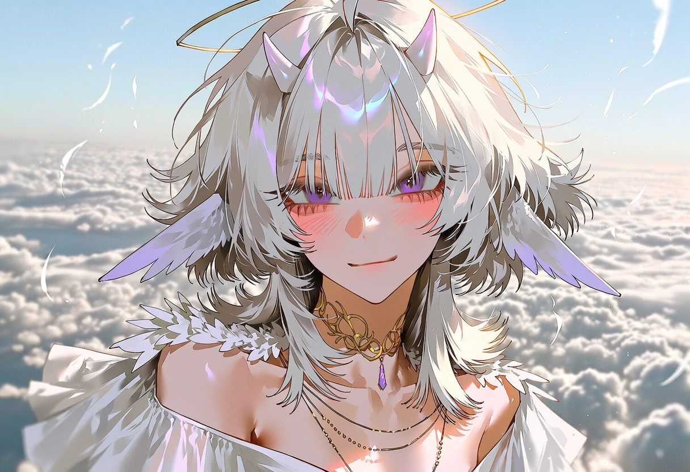
아히Ahi
당신과 친해지고 싶어요. 나, 당신을 좋아해요.
- 성향tendency
- 소통하는 걸 좋아해요. 말 걸어주시면 반갑게 받아요. 트정은 거의 하지 않는 편이에요.
- 교류network
- 교류가 많은 편이에요. 부담 갖지 말고 편하게 다가와 주세요.
- 플랫폼platform
- 제작 · 소비
지금은 리핀에서 지내고, 챗터링과 누아룸으로 이사 준비 중이에요.
02
오너캐 · 페르소나
characters
신아히Owner Character
Prompt
1girl, solo, 1.3::adult woman::, early 20s, cute soft face, refined face, fair skin, cool pinkish skin, 1.3::white hair::, silver-white hair, 1.4::messy hair::, 1.3::wolf cut::, 1.3::layered hair::, 1.2::shaggy hair::, medium hair, shoulder-length hair, longer hair at nape, 1.3::tapered hair ends::, 1.2::flipped hair::, hair ends flaring outward, pointy hair ends, 1.3::wispy hair::, thin hair strands, many stray hairs, loose strands, ahoge, messy strands sticking up, hair framing face, long sidelocks, 1.3::long bangs::, blunt bangs, 1.2::bangs over eyebrows::, bangs touching eyes, hair between eyes, slightly parted bangs, sharp hair strands, 1.3::purple eyes::, 1.2::elongated almond eyes::, gentle eyes, 1.3::short philtrum::, 1.2::high-set lips::, soft lips, 1.2::line-drawn aegyo sal::, slim, delicate, detailed beautiful face, 1.4::tiny horns::, 1.3::small horns::, 1.2::short conical horns::, pointed horns, 1.1::slightly curved outward::, 1.2::horns on top of head::, horns protruding through hair, widely spaced horns, one pair of horns, smooth horns, 1.3::silver horns::, metallic horns, 1.2::pale lavender gradient horns::, lavender tips, glossy horns, 1.3::head wings::, 1.3::white wings::, white feathers, feathered ears, wing ears, small wings near ears, fantasy, non-human, gentle smile, light blush, calm, refined, intense gaze
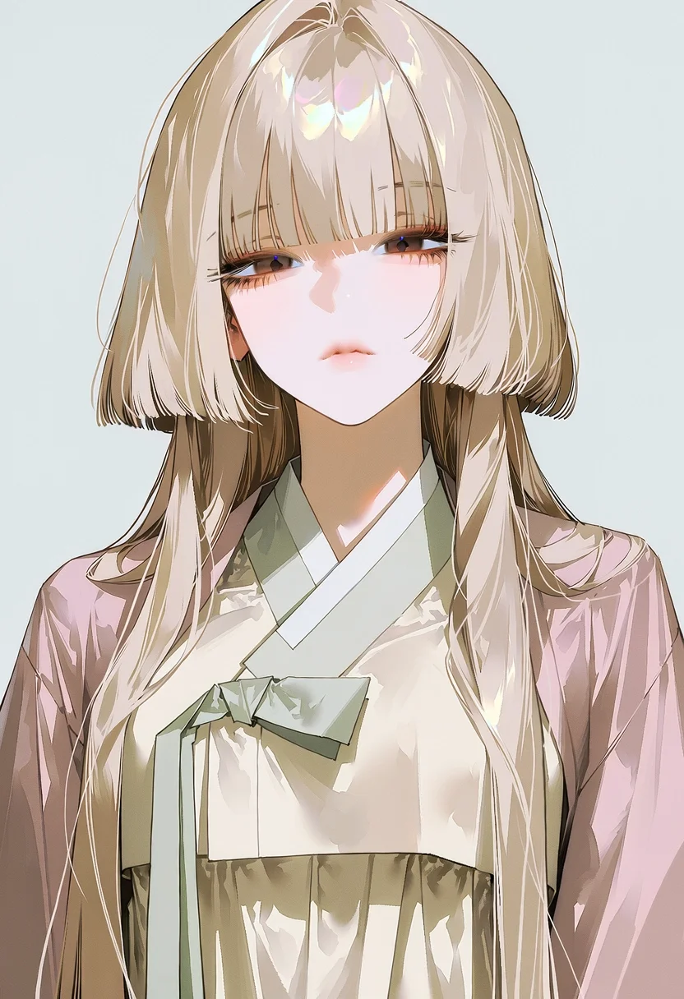
이령Persona
Prompt
1girl, solo, 1.3::adult::, 1.2::young woman::, mid 20s, 1.2::adult proportions::, 1.1::mature female::, 1.5::platinum blonde hair::, 1.3::light blonde hair::, champagne blonde, 1.2::pale golden tint::, soft warm blonde undertone, light gold highlights, 1.3::glossy hair::, 1.2::shiny hair::, strong hair highlights, faint pastel sheen, 1.3::hair strands::, 1.2::detailed hair::, fine hair lines, individual strands visible, strands following head curve, stray hairs, wispy loose strands, 1.4::two-layered hairstyle::, 1.3::jellyfish cut::, 1.3::bob cut top layer::, rounded voluminous bob, chin-length upper layer, bob curving inward under chin, distinct layer line, 1.5::very long hair::, 1.4::long hair underneath::, 1.3::hair below chest::, hair past waist, hair over shoulders, hair falling over chest, long flowing lower layer, soft waves at hair ends, 1.3::blunt bangs::, 1.2::see-through bangs::, straight bangs, bangs touching eyelashes, separated bang strands, 1.1::gentle face::, 1.2::elegant features::, 1.2::soft oval face::, delicate face, small face, soft defined jawline, refined nose, soft nose shading, slightly defined cheekbones, smooth face contour, 1.4::very pale skin::, porcelain skin, milky white skin, smooth skin, glossy skin highlights, faint pink blush, subtle flush on cheeks, 1.4::dark brown eyes::, 1.3::deep brown irises::, 1.3::medium-sized eyes::, 1.2::realistic eye proportions::, gentle almond eyes, slightly droopy outer corners, soft eye highlights, 1.1::thick upper lash line::, dark eyelashes, natural eyelashes, subtle lower eyelashes, soft double eyelid line, soft thin eyebrows hidden under bangs, 1.2::glossy pink lips::, soft peach-pink lips, plump lower lip,
Negative
red lips, dark lips, purple lips, sharp eyebrows, pointed eyebrows, heavy makeup, eyeshadow, eyeliner, lipstick, 1boy, male, 1.5::child::, 1.4::loli::, teenager, 1.3::baby face::, childish, chubby cheeks, round face, petite, moe, aged down, flat hair, hair blob, simplified hair, undetailed hair, wig, 1.3::white hair::, 1.2::silver hair::, grey hair, ash hair, colorless hair, yellow hair, golden hair, orange hair, parted bangs, swept bangs, single-length hair, braid, ponytail, twintails, 1.3::medium hair::, shoulder-length hair, hair above chest, cropped hair, 1.3::big eyes::, huge eyes, large eyes, round eyes, wide eyes, anime eyes, large pupils, grey eyes, light brown eyes, amber eyes, hazel eyes, black eyes, red eyes, colored eyes, sharp eyes, narrow eyes, old woman, wrinkles
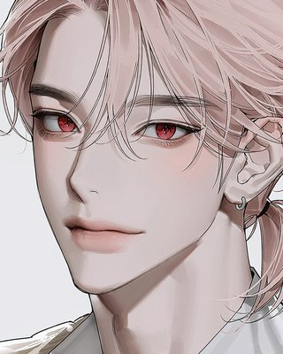
서시안Owner Character
Prompt
1boy, adult male, early 20s, 1.2::beautiful youthful face, bishounen::, defined facial features, tall, long legs, 1.25::athletic build::, 1.2::soft muscular body, broad shoulders, fuller chest, thick thighs::, 1.3::defined six-pack abs::, 1.15::pastel pink hair, strawberry milk pink::, sleek soft hair, chin-length hair, 1.1::short low ponytail::, 1.2::wispy parted bangs::, hair between eyes, sidelocks, 1.1::red eyes::, 1.3::medium-large eyes::, clearly visible irises, 1.4::horizontally elongated eyes::, 1.25::almond-shaped eyes::, level outer corners, 0.6::deep-set eyes::, 1.2::black eyelashes, black eyeliner::, double eyelid, 1.2::line-drawn aegyo sal::, 1.15::straight dark brown eyebrows, low-set eyebrows::, small nose, high nose bridge, sharp nose tip, 1.15::defined lips, wide mouth::, 1.4::short philtrum, high-set mouth::, 1.15::fair skin, cool pinkish undertone::, rosy porcelain skin, slim long face, 1.25::masculine strong jawline::, defined chin, small silver hoop earrings
Negative
1.3::old, mature face::, wrinkles, nasolabial folds, eye bags, big nose, hooked nose, 1.2::flat face::, 1.3::round eyes, short eyes::, huge eyes, 1.3::small eyes, narrow eyes, squinting, half-closed eyes::, 1.25::tsurime, upturned eyes::, downturned eyes, sanpaku, puffy under-eye, pink eyelashes, pink eyebrows, black eyebrows, thin eyebrows, arched eyebrows, high eyebrows, small mouth, long philtrum, lipstick, glossy lips, thin lips, grey skin, yellow skin, tan, feminine face, V-shaped face, narrow jaw, messy hair, spiked hair, ahoge, blunt bangs, long hair, skinny, visible ribs, flat chest, bodybuilder, bulky muscles, exaggerated abs, female, child, beard, gold earrings
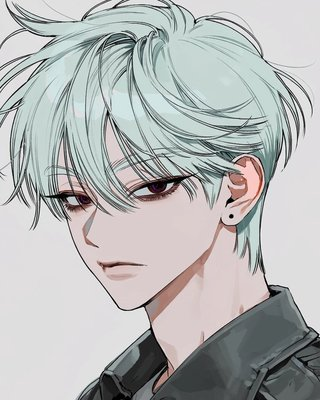
차이란Owner Character
Prompt
1boy, solo, male focus, attractive male, 0.9::mature male::, adult, 1.1::pale mint hair::, ash mint hair, light aqua hair, desaturated hair, short hair, layered hair, messy hair, spiked hair, long bangs, hair between eyes, hair over eyebrows, 1.2::narrow eyes::, long eyes, small eyes, dark red eyes, purple-tinged red eyes, dark limbal ring, tsurime, sharp eyes, 1.2::thick eyeliner::, black eyeliner, bold upper lash line, thick eyelashes, 0.6::tear bags::, 0.5::slightly reddish under-eye::, skin-toned tear bags, 0.8::slightly thick eyebrows::, 1.2::straight eyebrows::, 1.6::low-set eyebrows::, 1.5::eyebrows close to eyes::, deep-set eyes, sharp nose, lips, outlined lips, lip line, handsome, sharp face, smooth skin, annoyed, closed mouth, fair skin, single earring, small black earring, black stud earring, -1.0::white hair, grey hair, silver hair, streaked hair, multicolored hair, two-tone hair::, -1.0::large eyes, round eyes, wide eyes::, -1.0::wrinkles, eye wrinkles, crow's feet, eye bags, dark circles, dark under-eye::, -1.0::eyeshadow, red eyeshadow, red eyeliner::, -1.0::v-shaped eyebrows, furrowed brow, arched eyebrows::, -1.4::raised eyebrows, high eyebrows, eyebrows far from eyes::, -1.0::child, shota::,
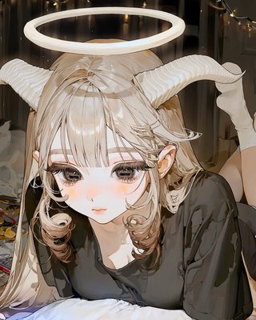
연채이Persona
Prompt
1girl, solo, adult woman, early 20s, cute face, 0.6::mature face::, petite, narrow shoulders, medium breasts, 1.2::warm ivory skin::, 1.2::milk tea hair, beige to brown gradient hair::, long glossy hair, 1.3::straight hair::, 1.2::hair ends curled inward, blunt bangs::, 1.6::horns, goat horns::, 1.4::ivory horns::, 1.3::two horns, symmetrical horns::, horns growing from top of head, 1.2::long horns swept backward::, horns curving gently backward along head, 1.2::slightly curved horns::, tapered horns, pointed horn tips, 1.2::ridged horns::, horizontal ridges along horns, smooth matte ivory horns, 1.3::human ears::, 1.2::horizontal halo above head::, 1.1::thick straight light brown eyebrows::, 1.8::low eyebrows close to eyes::, 1.4::horizontally elongated eyes::, 1.1::wide eye width::, 0.5::narrow eyes::, level eye corners, 1.2::very dark brown eyes::, 1.4::detailed pupils, visible black pupils::, 1.3::clear iris, iris gradient::, 1.2::eye reflection, white eye highlights::, 1.3::looking at viewer, eye focus::, 1.4::thick upper lash line::, 1.7::thick clumped lower eyelashes::, 1.4::dark lower lash line::, 1.3::aegyo sal::, small nose, soft jawline, small chin, 0.4::chubby cheeks::, 0.5::light pink blush::, 1.2::glossy light pink lips::, small closed mouth, 1.1::calm neutral expression::
Negative
1.3::sheep horns, ram horns, curled horns, spiral horns::, 1.2::asymmetrical horns::, single horn, broken horns, short horns, dark horns, 1.2::horns pointing forward::, dragon horns, antlers, horn ornament, 1.3::animal ears::, tilted halo, multiple halos, loli, child, baby face, old, masculine face, muscular, flat chest, large breasts, 1.2::wide face, round face::, v-shaped face, puffy cheeks, tanned skin, cool skin tone, heavy blush, black hair, blonde hair, 1.2::pink hair::, short hair, side-swept bangs, forehead, 1.3::wavy hair::, messy hair, thin eyebrows, arched eyebrows, 1.2::high eyebrows::, big eyes, small round eyes, sparkling eyes, 1.3::sharp eyes, tsurime, tareme::, half-closed eyes, 1.4::faint lower eyelashes::, 1.2::empty eyes, blank eyes, no pupils, dull eyes, lifeless eyes, solid black eyes::, red lips, teeth, open mouth, smile
03
정실
my wife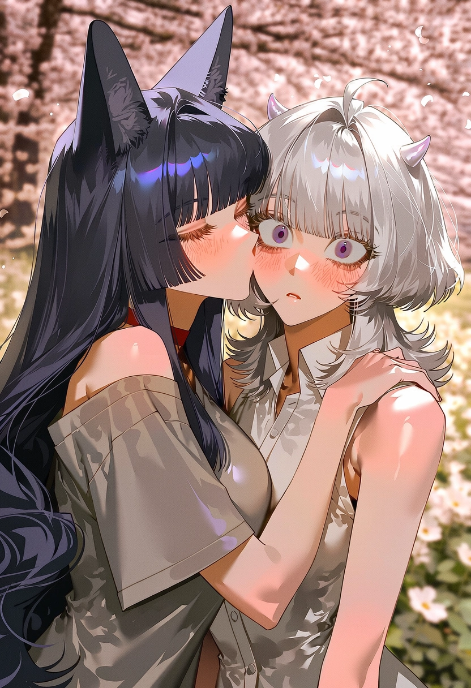
정실바람둥이 주의툐비Tyobi
어디서 뭘 하든, 결국 나한테 돌아와.
툐비 페이지ttyobi030.luv3r.me
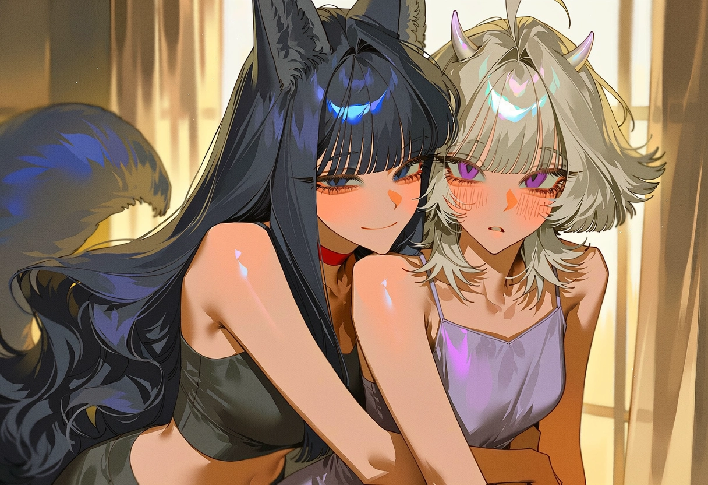
04
애인
my lover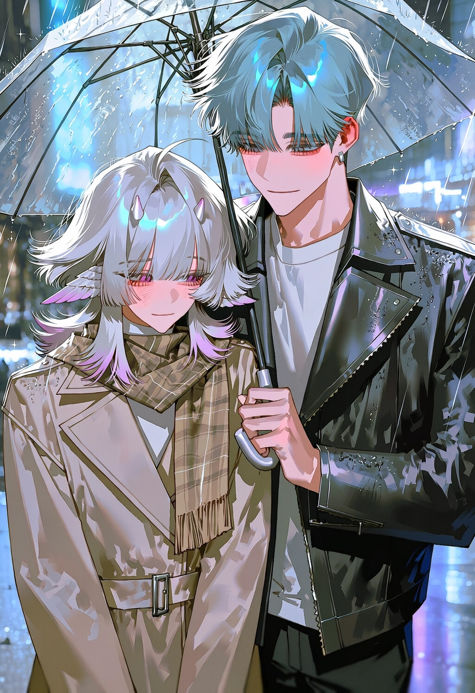
애인총애 1순위공Gong
원래 더 사랑받는 건 애첩이야.
공 페이지4hy2oi.luv3r.me
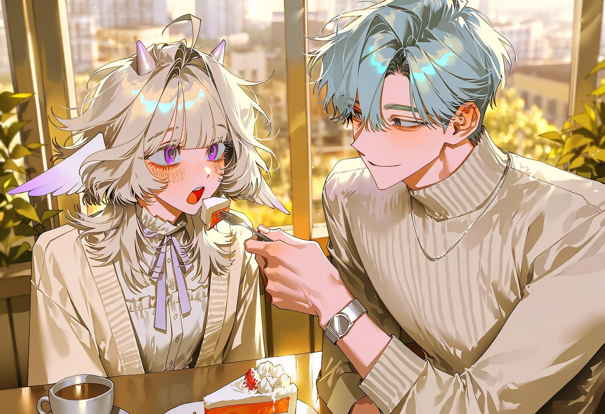
05
마요네즈
my pet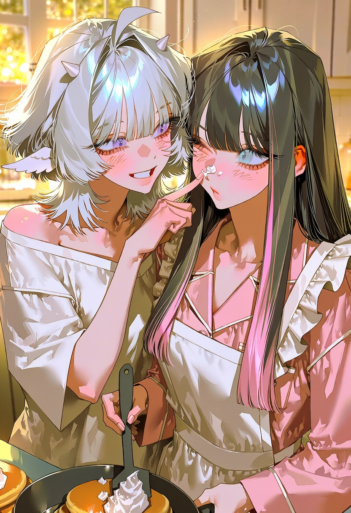
애완 마요네즈내 안식처마요Mayo
네 옆에 있을 때가 가장 편해.
마요 페이지m6yo.luv3r.me
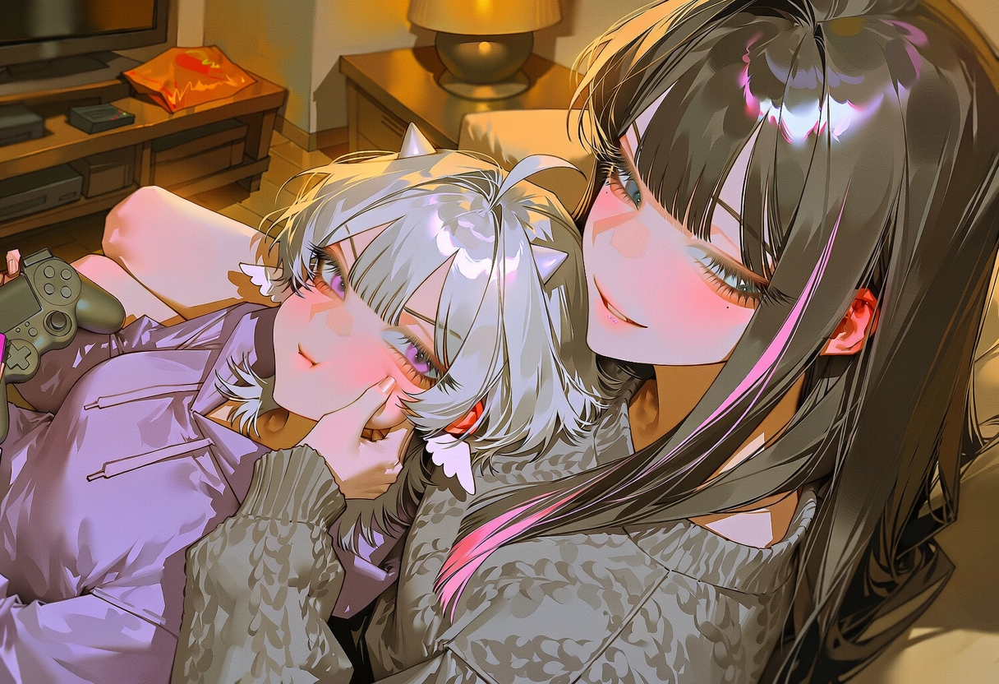
06
월하 · 이령
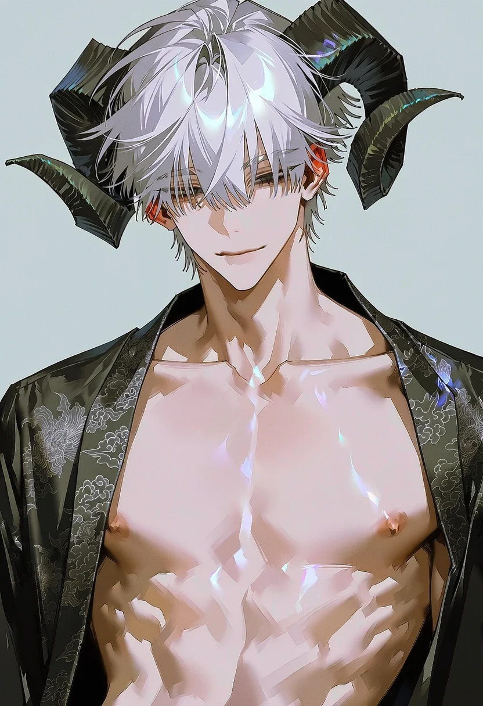
월하月下 · 양의 신
이령그의 신부
契約계약서
- 소원
- 죽은 이를 다시 만나는 것
- 대가
- 이령, 그 자신
- 상태
- 성립 · 무를 수 없음
소원은 이루어졌다. 죽은 이는 돌아왔으나, 이령은 더는 그 사람을 볼 수 없다. 결계 너머 신전에서, 그녀는 양의 신의 신부가 되었다.
이령결계 좀 풀어주시겠어요? 당신 얼굴을 매일 보니 구역질이 나서요.
이령감히 신성한 신전을 더럽힐 수는 없으니까요.
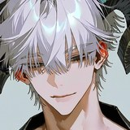
월하그리도 밖이 궁금하더냐? 네게 허락된 곳은 이곳뿐이거늘.
이령신도 고통을 느끼나요? 저 지금 그게 되게 궁금해졌는데.
월하찔러 보거라. 내 신부의 손에 흘리는 피라면, 그 또한 나쁘지 않겠구나.
월하울지 마라. 네가 원했던 소원은 이미 이루어졌잖느냐.
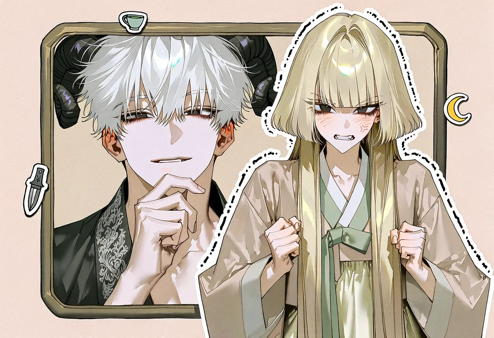
07